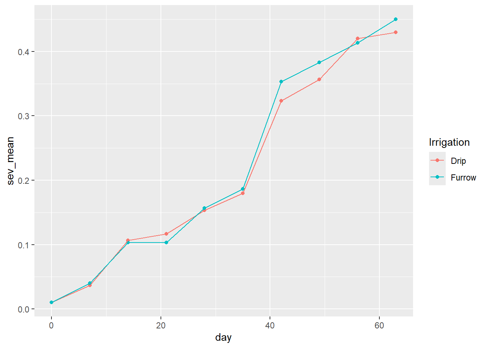
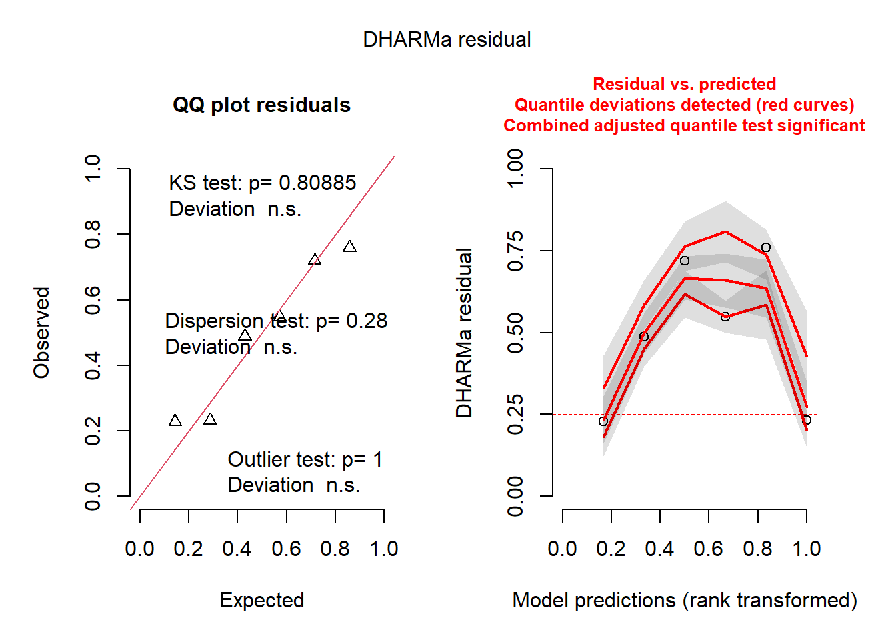

curve <- gsheet2tbl("https://docs.google.com/spreadsheets/d/1bq2N19DcZdtax2fQW9OHSGMR0X2__Z9T/edit#gid=1807247585")
curve$severity2 <- (curve$severity*100)Aula 8
Curva de progresso da doença
Importando os dados
Para construção de uma curva de progresso da doença usaremos como exemplo um conjunto de dados que descreve diferentes métodos de irrigação (variável independente, um fator, 2 níveis) e seu efeito sobre a severidade (variável dependente) ao longo dos dias.
Como os dados de severidade são apresentados em valores decimais, é possível colocá-los em porcentagem fazendo multiplicação por 100.
Para construir a curva, primeiro é preciso agrupar os dados (group_by) em função do método de irrigação e do dia. Em seguida, é calculada a média em função das mesmas variáveis (dia e irrigação) com a função summarise(sev_mean = mean(sev_X)).
curve2 <- curve %>%
group_by(Irrigation, day) %>%
summarise(sev_mean = mean(severity))
curve2# A tibble: 20 × 3
# Groups: Irrigation [2]
Irrigation day sev_mean
<chr> <dbl> <dbl>
1 Drip 0 0.01
2 Drip 7 0.0367
3 Drip 14 0.107
4 Drip 21 0.117
5 Drip 28 0.153
6 Drip 35 0.18
7 Drip 42 0.323
8 Drip 49 0.357
9 Drip 56 0.42
10 Drip 63 0.43
11 Furrow 0 0.01
12 Furrow 7 0.04
13 Furrow 14 0.103
14 Furrow 21 0.103
15 Furrow 28 0.157
16 Furrow 35 0.187
17 Furrow 42 0.353
18 Furrow 49 0.383
19 Furrow 56 0.413
20 Furrow 63 0.45 Visualização gráfica
Para conhecer o comportamento da severidade ao longo do tempo, será construído um gráfico de pontos (geom_point) e linhas (geom_line), diferenciando os tratamentos (“Irrigation”) pela cor:
curve2 %>%
ggplot(aes(day, sev_mean, colour = Irrigation))+
geom_point()+
geom_line()
Ou, uma figura com dois gráficos. Um para cada nível do fator “Irrigation”:
curve2 %>%
ggplot(aes(day, sev_mean))+
geom_point()+
geom_line()+
facet_wrap(~Irrigation)
Cálculo da área abaixo da curva de progresso da doença
Para o cálculo da área abaixo da curva de progresso da doença (AACPD, ou “area under the disease progress curve”, AUDPC), será criado um novo dataframe. Para isso, será feito o agrupamento (group_by) das variáveis em função do tratamento (”Irrigation”) e das repetições (“rep”). Em seguida, será utilizada a função summarise para o cálculo da AACPD (função AUDPC, pacote epifitter).
curve3 <- curve %>%
group_by(Irrigation, rep) %>%
summarise(aacpd = AUDPC(day, severity))
curve3# A tibble: 6 × 3
# Groups: Irrigation [2]
Irrigation rep aacpd
<chr> <dbl> <dbl>
1 Drip 1 13.0
2 Drip 2 13.9
3 Drip 3 13.3
4 Furrow 1 13.5
5 Furrow 2 14.1
6 Furrow 3 13.7ANOVA
Antes de realizar análise de variância é preciso estabelece um modelo, o que será com os valores de AACPD e a função (lm):
m_curve <- lm(aacpd ~ Irrigation+factor(rep),
data = curve3)Avaliação das pressuposições
Com funções do pacote Performance:
check_normality(m_curve)OK: residuals appear as normally distributed (p = 0.380).check_heteroscedasticity(m_curve)OK: Error variance appears to be homoscedastic (p = 0.704).Com o pacote DHARMa:
plot(simulateResiduals(m_curve))
Com o teste de Shapiro-Wilk (shapiro.test) e o teste de Bartlett (bartlett.test):
shapiro.test(m_curve$residuals)
Shapiro-Wilk normality test
data: m_curve$residuals
W = 0.90104, p-value = 0.3801bartlett.test (aacpd ~ Irrigation,
data = curve3)
Bartlett test of homogeneity of variances
data: aacpd by Irrigation
Bartlett's K-squared = 0.46162, df = 1, p-value = 0.4969Ambas as metodologias demonstram que os dados seguem distribuição normal e possuem homocedasticidade, logo é possível proceder análise de variância.
ANOVA
anova(m_curve)Analysis of Variance Table
Response: aacpd
Df Sum Sq Mean Sq F value Pr(>F)
Irrigation 1 0.23602 0.236017 10.605 0.08275 .
factor(rep) 2 0.61291 0.306454 13.771 0.06770 .
Residuals 2 0.04451 0.022254
---
Signif. codes: 0 '***' 0.001 '**' 0.01 '*' 0.05 '.' 0.1 ' ' 1A ANOVA mostra que não há diferença entre as áreas.
agricolae::cv.model(m_curve)[1] 1.097572O que poderia ser explicado pelo coeficiente de variação do experimento, que foi muito baixo (CV = 1.09 %).